| x | y | y_hat | residual |
|---|---|---|---|
| -2.991 | 2.481 | -0.130 | 2.611 |
| -1.005 | -1.302 | 0.691 | -1.994 |
| 3.990 | 3.929 | 2.757 | 1.172 |
Introduction to Simple Linear Regression
2025-11-10
Housekeeping
Homework 8 due tonight!
Project proposal feedback (revisions due tonight midnight)
Linear regression
Crash course; take STAT 211 for more depth!
Fitting a line to data
Recall equation of a line: \(y = mx + b\)
Intercept \(b\) and slope \(m\) determine specific line
This function is deterministic: as long as we know \(x\), we know value of \(y\) exactly
Simple linear regression: statistical method where the relationship between variables \(x\) and \(y\) is modeled as a line + error:
\[ y = \underbrace{\beta_{0} \ +\ \beta_{1} x}_{\text{line}} \ + \underbrace{\epsilon}_{\text{error}} \]
Simple linear regression model
\[ y = \beta_{0} + \beta_{1} x + \epsilon \]
We have two variables:
- \(y\) is response variable. Must be (continuous) numerical.
- \(x\) is explanatory variable, also called the predictor variable
- Can be numerical or categorical
\(\beta_{0}\) and \(\beta_{1}\) are the model parameters (intercept and slope)
- Estimated using the data, with point estimates \(b_{0}\) and \(b_{1}\)
\(\epsilon\) (epsilon) represents the error
Accounts for variability: we do not expect all data to fall perfectly on the line!
Sometimes we drop the \(\epsilon\) term for convenience
Linear relationship
Suppose we have the following data:
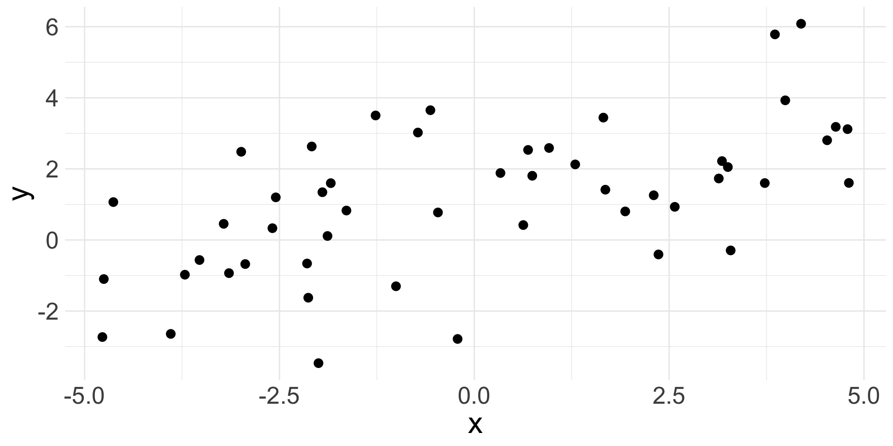
- Observations won’t fall exactly on a line, but do fall around a straight line, so maybe a linear relationship makes sense!
Fitted values
Suppose we have some specific estimates \(b_0\) and \(b_{1}\). We could approximate the linear relationship using these values as:
\[ \hat{y} = b_{0} + b_{1} x \]
The hat on \(y\) signifies an estimate: \(\hat{y}\) is the estimated/fitted value of \(y\) given these specific values of \(x\), \(b_{0}\) and \(b_{1}\)
- Can obtain a estimate \(\hat{y}\) for every observed response \(y\)
Note that the fitted value is obtained without the error
Fitted values (cont.)

- Suppose our estimated line is the yellow one: \(\hat{y} = 1.11 + 0.41 x\)
- The fitted value \(\hat{y}_{i}\) for \(y_{i}\) lies on the line; the above plot shows three specific examples
Residual
Residuals (denoted as \(e\)) are the remaining variation in the data after fitting a model.
\[ \text{observed response} = \text{fit} + \text{residual} \]
- For each observation \(i\), we obtain the residual \(e_{i}\) via:
\[y_{i} = \hat{y}_{i} + e_{i} \Rightarrow e_{i} = y_{i} - \hat{y}_{i}\]
Residual = difference between observed and expected
In the plot, the residual is indicated by the vertical dashed line
What is the ideal value for a residual? What does a positive/negative residual indicate?
Residual (cont.)
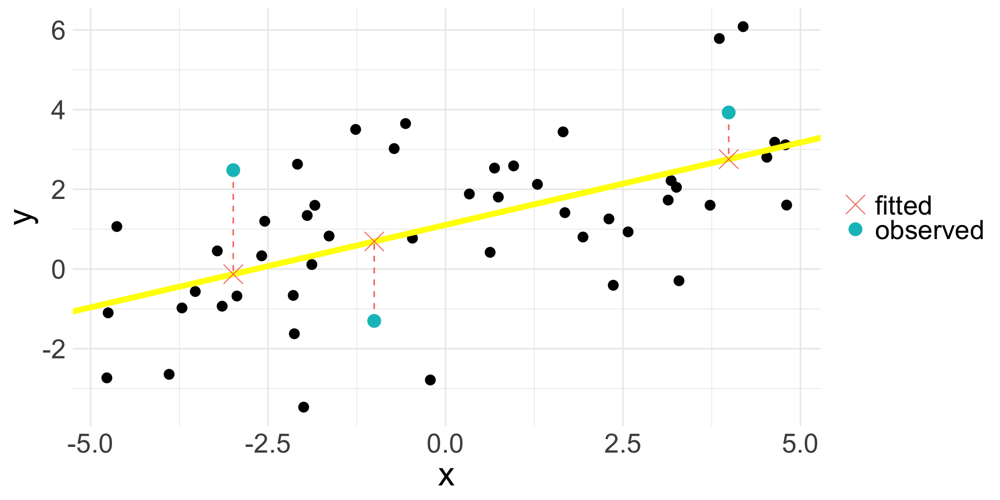
Residual values for the three highlighted observations:
Residual plot
Residuals are very helpful in evaluating how well a model fits a set of data
Residual plot: original \(x\) values plotted against corresponding residuals on \(y\)-axis
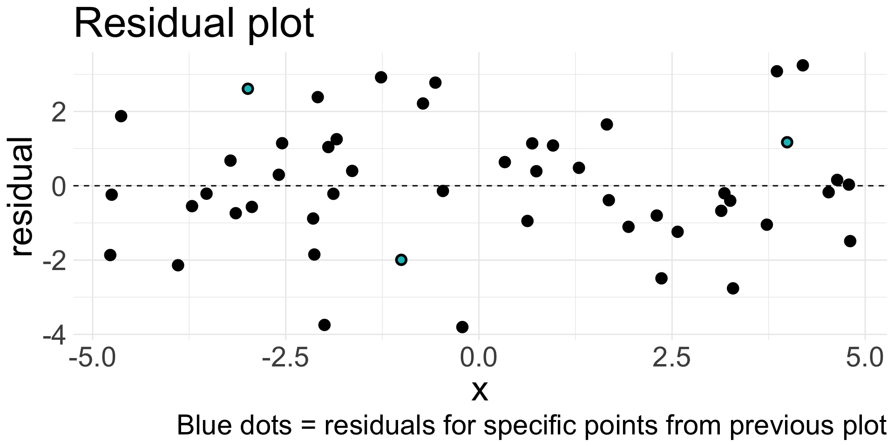
Residual plot (cont.)
Residual plots can be useful for identifying characteristics/patterns that remain in the data even after fitting a model.
Just because you fit a model to data, does not mean the model is a good fit!
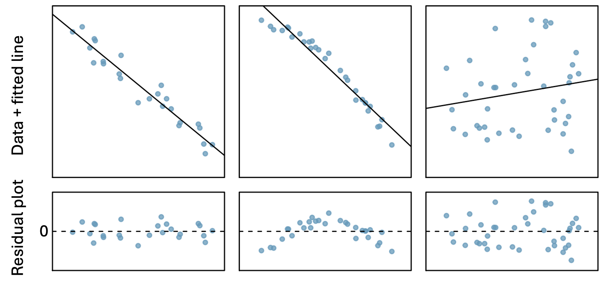
Can you identify any patterns remaining in the residuals?
Describing linear relationships
Different data may exhibit different strength of linear relationships:
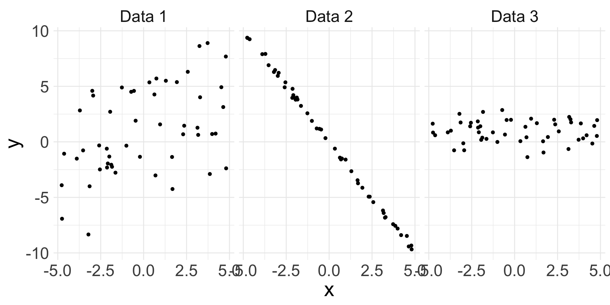
- Can we quantify the strength of the linear relationship?
Correlation
Correlation is describes the strength of a linear relationship between two variables
- The observed sample correlation is denoted by \(R\)
- Formula (not important): \(R = \frac{1}{n-1} \sum_{i=1}^{n} \left(\frac{x_{i} - \bar{x}}{s_x} \right)\left(\frac{y_{i} - \bar{y}}{s_y} \right)\)
Always takes a value between -1 and 1
-1 = perfectly linear and negative
1 = perfectly linear and positive
0 = no linear relationship
Nonlinear trends, even when strong, sometimes produce correlations that do not reflect the strength of the relationship
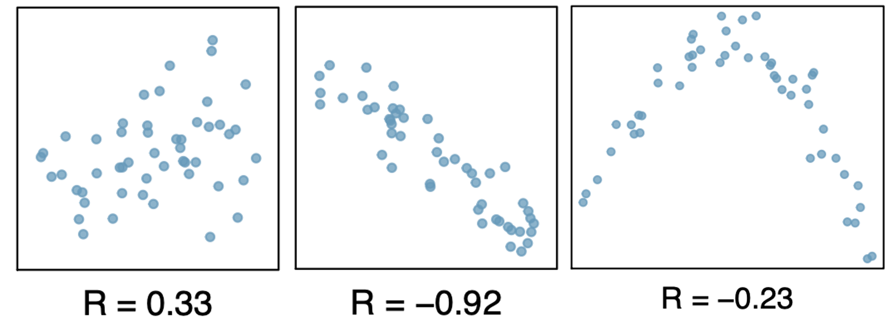
Least squares regression
In Algebra class, there exists a single (intercept, slope) pair because the \((x,y)\) points had no error; all points landed on the line.
Now, we assume there is error
How do we choose a single “best” \((b_{0}, b_{1})\) pair?
Different lines
The following display the same set of 50 observations.
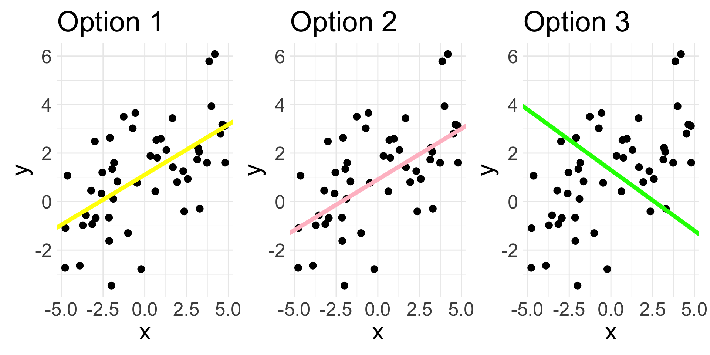
Which line would you say fits the data the best?
There are infinitely many choices of \((b_{0}, b_{1})\) that could be used to create a line
We want the BEST choice (i.e. the one that gives us the “line of best fit”)
How to define “best”?
Line of best fit
One way to define a “best” is to choose the specific values of \((b_{0}, b_{1})\) that minimize the total residuals across all \(n\) data points. Results in following possible criterion:
- Least absolute criterion: minimize sum of residual magnitudes:
\[ |e_{1} | + |e_{2}| + \ldots + |e_{n}| \]
- Least squares criterion: minimize sum of squared residuals:
\[ e_{1}^2 + e_{2}^2 +\ldots + e_{n}^2 \]
The choice of \((b_{0}, b_{1})\) that satisfy least squares criterion yields the least squares line, and will be our criterion for “best”
On previous slide, yellow line is the least squares line, whereas pink line is the least absolute line
Linear regression model
Remember, our linear regression model is:
\[ y = \beta_{0} + \beta_{1}x + \epsilon \]
While not wrong, it can be good practice to be specific about an observation \(i\):
\[ y_{i} = \beta_{0} + \beta_{1} x_{i} + \epsilon_{i}, \qquad i = 1,\ldots, n \]
Here, we are stating that each observation \(i\) has a specific:
- explanatory variable value \(x_{i}\)
- response variable value \(y_{i}\)
- error/randomness \(\epsilon_{i}\)
In SLR, we further assume that the errors \(\epsilon_{i}\) are independent and Normally distributed
Conditions for the least squares line (LINE)
Like when using CLT, we should check some conditions before saying a linear regression model is appropriate!
Assume for now that \(x\) is continuous numerical.
Linearity: data should show a linear trend between \(x\) and \(y\)
Independence: the observations \(i\) are independent of each other
e.g. random sample
Non-example: time-series data
Normality/nearly normal residuals: the residuals should appear approximately Normal
- Possible violations: outliers, influential points (more on this later)
Equal variability: variability of points around the least squares line remains roughly constant
Running example
We will see how to check for these four LINE conditions using the cherry data from openintro.
| diam | volume |
|---|---|
| 8.3 | 10.3 |
| 8.6 | 10.3 |
| 8.8 | 10.2 |
| 10.5 | 16.4 |
| 10.7 | 18.8 |
Explanatory variable \(x\):
diamResponse variable \(y\):
volume
Our candidate linear regression model is as follows
\[ \text{volume} = \beta_{0} + \beta_{1} \text{diameter} +\epsilon \]
1. Linearity
Assess before fitting the linear regression model by making a scatterplot of \(x\) vs. \(y\):
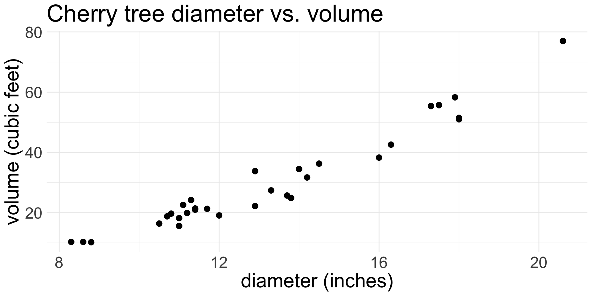
Does there appear to be a linear relationship between diameter and volume?
- I would say yes
2. Independence
Assess before fitting the linear regression model by understanding how your data were sampled.
- The
cherrydata do not explicitly say that the trees were randomly sampled, but it might be a reasonable assumption
An example where independence is violated:
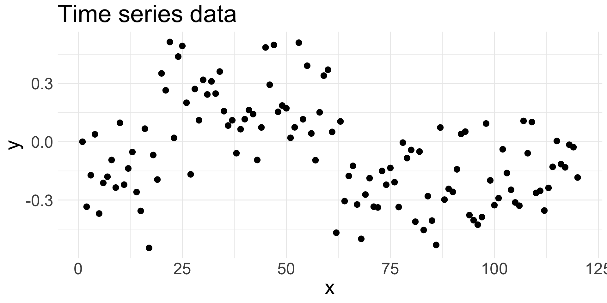
Here, the data are a time series, where observation at time point \(i\) depends on the observation at time \(i-1\).
- Successive/consecutive observations are highly correlated
Fitting the model
Because the first two conditions are met, we can go ahead and fit the linear regression model (i.e. estimate the values of the coefficients)
- After fitting the model, we get the following estimates: \(b_{0}= -36.94\) and \(b_{1} = 5.07\). So our fitted model is:
\[ \widehat{\text{volume}} = -36.94 + 5.07 \times \text{diameter} \]
Remember: the “hat” denotes an estimated/fitted value!
We will soon see how \(b_{0}\) and \(b_{1}\) are calculated and how to interpret them
The next two checks can only occur after fitting the model.
3. Nearly normal residuals
Assess after fitting the model by making histogram of residuals and checking for approximate Normality.
- Remember, residuals are \(e_{i} = y_{i} - \hat{y}_{i}\)
Do the residuals appear approximately Normal?
- I think so!
4. Equal variance
Assess after fitting the model by examining a residual plot and looking for patterns.
A good residual plot:
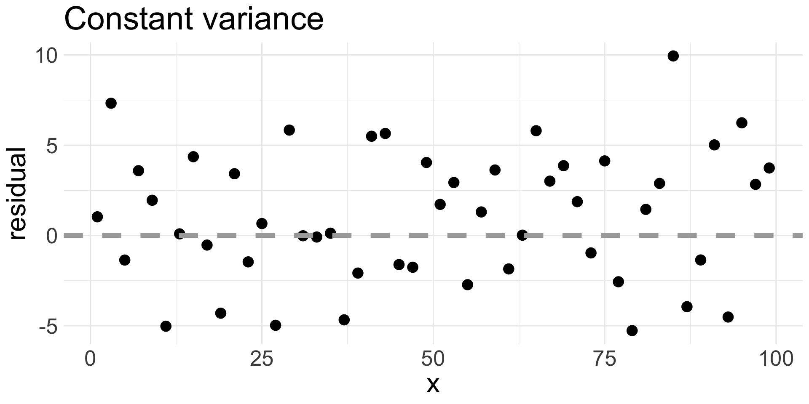
A bad residual plot:
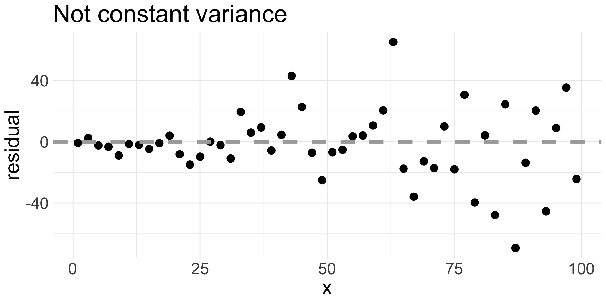
We usually add a horizontal line at 0.
4. Equal variance (cont.)
Let’s examine the residual plot of our fitted model for the cherry data:
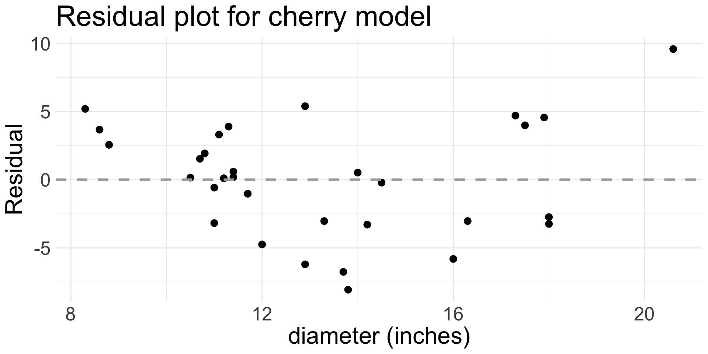
Do we think equal variance is met?
I would say there is a definite pattern in the residuals, so equal variance condition is not met.
Some of the variability in the errors appear related to
diameter